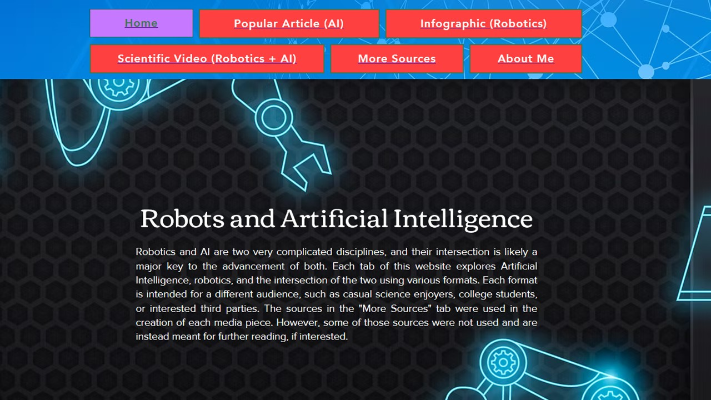
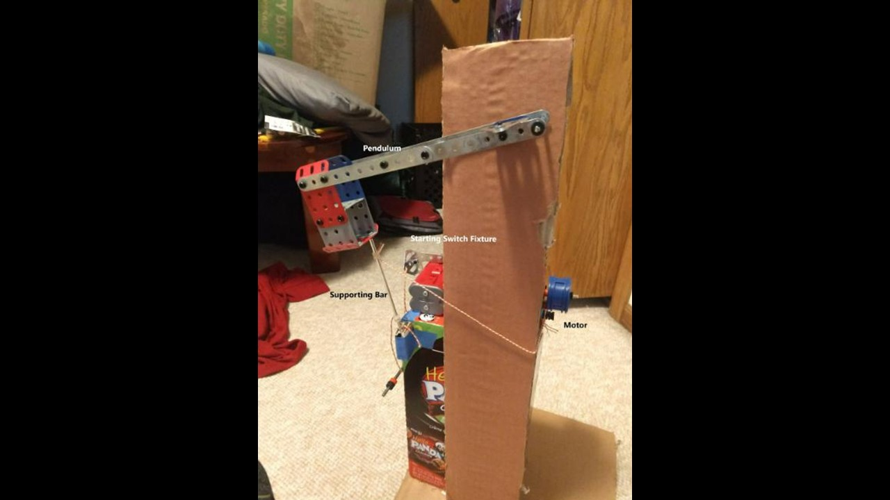
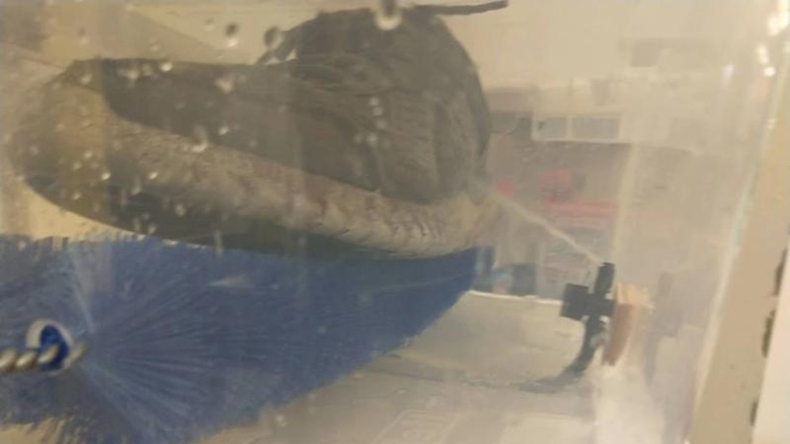
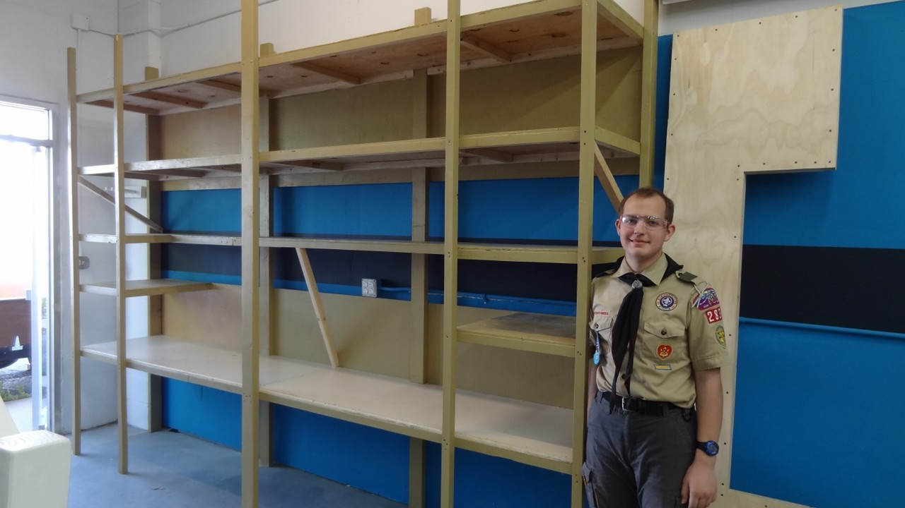

My Projects
Hello! The following are primarily projects I have done during my time in the Mechanical Engineering College at CSU.
Senior Design Project

I am in a team of four Mechanical Engineering students working together on this project. The project is a passive, knee-assist exoskeleton for people with weaker knees (or hobbyists) to boost their daily activity in the outdoors. We each had various roles, such as CAD designer, 3D Print Manager, Purchaser, and Simulator. I was the Simulator. I tested for the main spring's strength, wrote out calculations for the force per degree, and used software to help determine weak points on the exoskeleton. I also assisted in writing up the deliverables for the Critial and Final Design Reviews hosted by our professor.
Robotics and AI Research Project

I was in a class called "Writing in the Sciences" where we discussed how researchers can and do disperse their findings to certain audiences. This website was the final project for that class. Each page is a different medium, such as popular article, infographic, or video. Each medium may be intended for different audiences (most were the general public in my case). I enjoyed this project because I got to actually research a topic I found interesting: AI and robotics. The research is probably out of date now, but I learned a lot about these topics in the process.
Rube Goldberg Project

For this project, my class (dynamics) all had to individually create something that took a horizontal input force from one foot up and generated an output force at the same height. The idea was to have everyone's project, built independently, lined up and together create one big Rube Goldberg machine. I found a motor from an old K'Nex set of mine, wound a string around a wheel attached to the end of the motor, and when the motor was turned on, the string would pull out a bar holding a hammer-like pendulum up, which would then swing and initiate the next project. I quite enjoyed jerry-rigging and hot-glueing this one together. My idea to prop up the pendulum with that bar was my stroke of genius, and I also remember I really wanted to include that motor because that extra complexity made it really cool.
Auto Shoe Cleaner Project

This project was probably one of the more frustrating. I was in a small group for this one in my mechatronics class. We had one person in charge of coding the buttons and sensors, and I ended up in charge of buying and putting everything together (except the motors). I spent several nights staying up late to drill the holes, glue the brushes on some ball bearings, fit a wood block to hold the shoe steady, and trying to figure out how to supply the water (and soap even) to that sprayer. The main issue was that I lived far enough off campus that I had to work on this part on my own, and once I was done, *thats* when I brought it to the group so we could finish up the coding and put it all together. In the end, it worked well enough, but I wasn't truly satisfied with the result.
Eagle Scout Project

I am an Eagle Scout, and this project in particular was not possible without the support I had in the process. The goal was to build these tall shelves so that the local maker's space had more room for tools and their own personal projects. My dad helped with the designs, my church's youth volunteererd their time to help me build it, and my family stayed even longer to finish it through (we actually built two of these shelves). My job was to delegate tasks that needed to be done, like: cutting boards, marking places for screws, drilling those screw holes, and finally assembling it all together. My Eagle Scout Project was a test to see if I had stretched my muscles of Leadership, and I certainly hope to use and flex that skill well into the future.
Thank you for reading about the projects I have done in the past. I have learned a lot and I want to keep learning. One day I'll be making some of the coolest gadgets, and I just can't wait.